MEM1 · Last, spænding og tøjning. Videoerne tegnes live i din browser og fylder næsten ingenting.
Ét begreb pr. video, i slidernes rækkefølge.
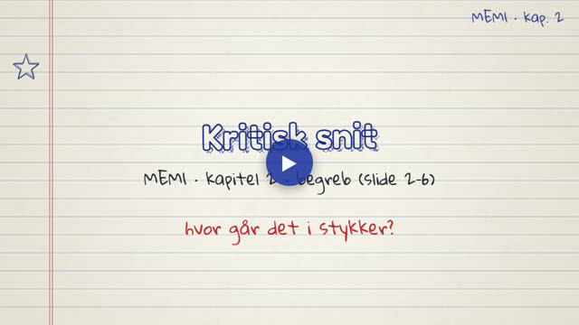
Kæden last, snitkræfter, spænding og tøjning, hvor det kritiske snit typisk ligger, og fremgangsmåden i fem trin.
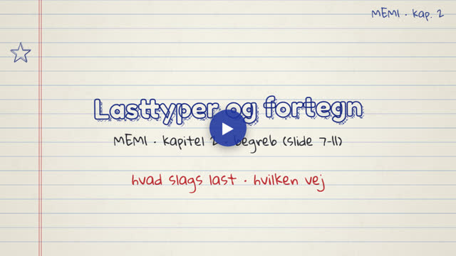
Statisk, vedvarende, stød og cyklisk last, punkt- og fordelt last, P, V, M og T, og fortegnsreglerne.
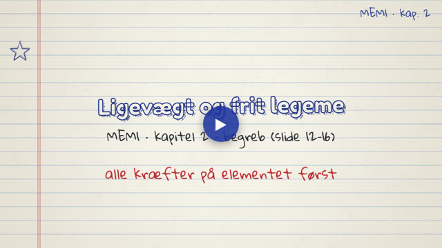
Rulle, charnier og indspænding, de tre ligevægtsligninger, frit legeme-diagram og de indre størrelser N, V og M.
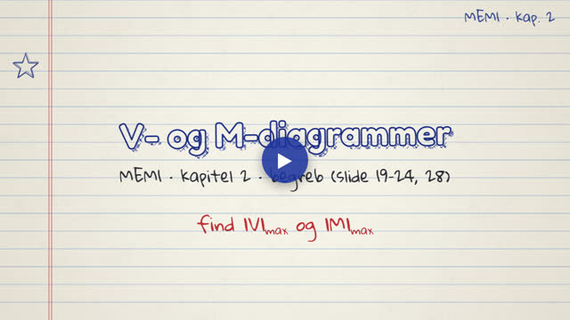
Bjælketyper, snitmetoden, sammenhængen mellem q, V og M, og hvorfor V = 0 peger på det største moment.
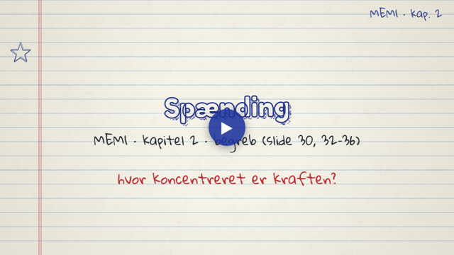
Normal- og forskydningsspænding, spændingselementet, τxy = τyx og plan spænding med tre tal.
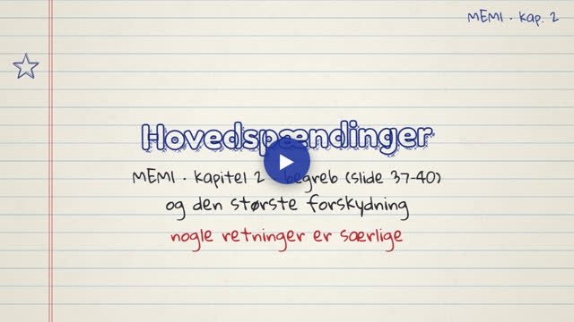
Transformationsligningerne, hovedspændinger, hovedretningen og den største forskydning 45° derfra.
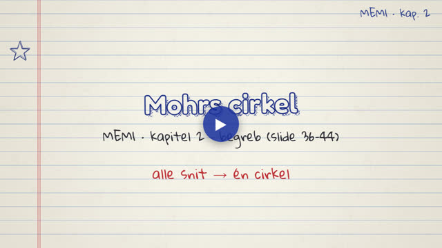
Transformationsligningerne, cirklens centrum og radius, hovedspændinger og den største forskydning, med eksemplet fra slide 44.
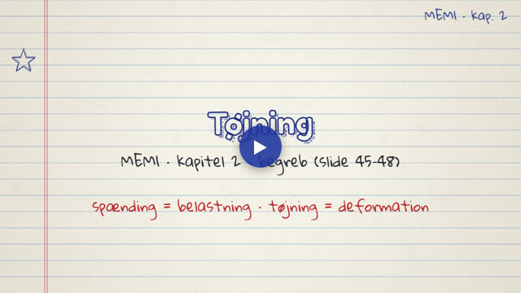
Normaltøjning, forskellen på deformation og tøjning, forskydningstøjning og eksemplet fra slide 48.
Eksempler og eksamensopgaver fra kapitlet, trin for trin.
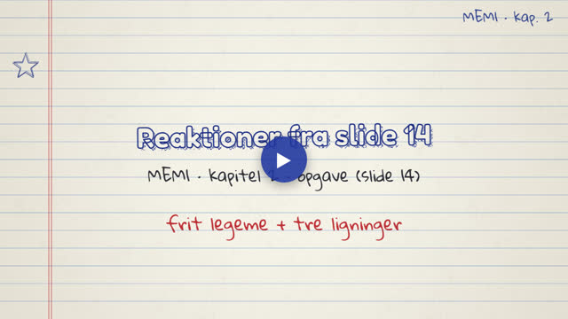
Reaktionerne på bjælken fra slide 14 med fordelt last og skrå kraft, inkl. kontrol.
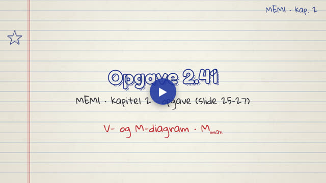
V- og M-diagram for en simpelt understøttet bjælke med punktlast i L/3. M_max = 2PL/9.
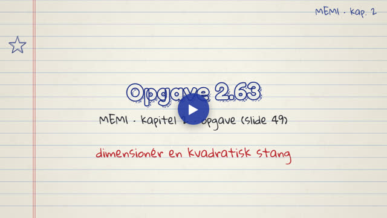
Kvadratisk stang med P = 10 kN og σ = 90 MPa. Sidelængden bliver 10,54 mm.
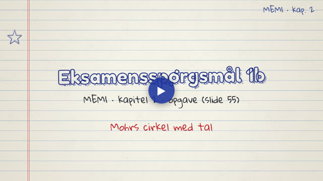
Eksamensspørgsmål 1b med Mohrs cirkel: σx = 90, σy = 10, τxy = 30 MPa.
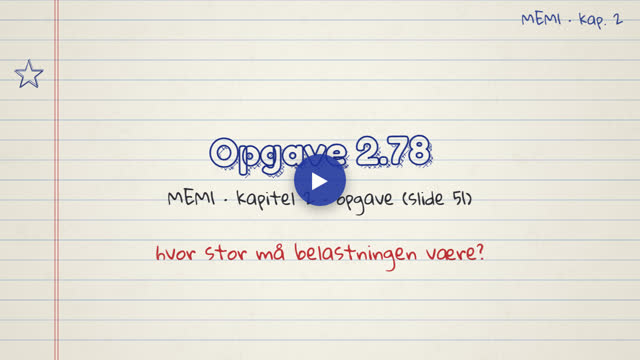
Find a, når den største forskydning højst må være 100 MPa. Resultat: a = 282,8 MPa.